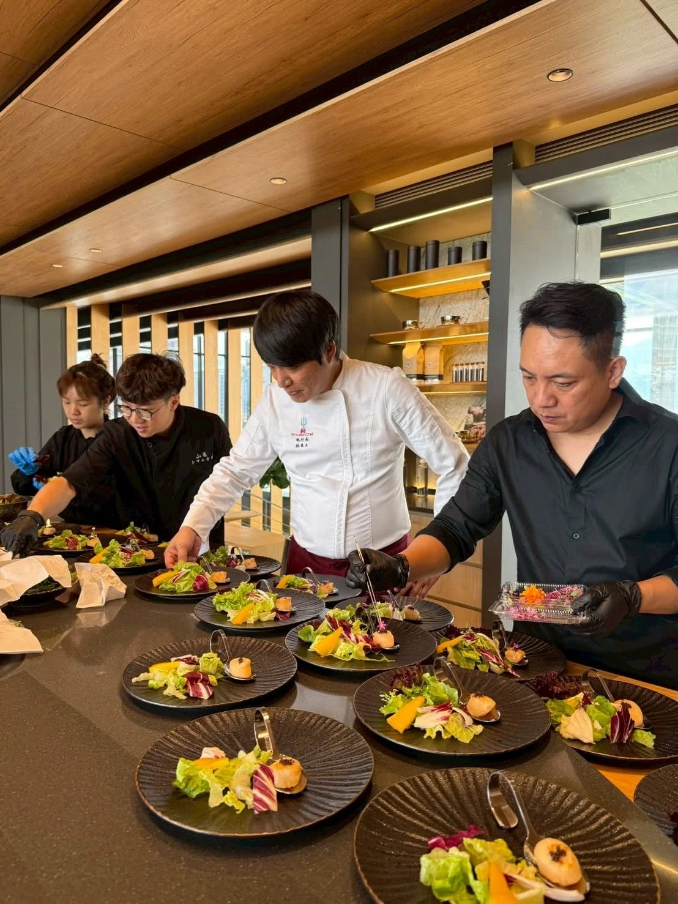

很多人想辦一場「客製化宴會」，但不知道從何開始溝通，結果最後還是套用制式方案。其實客製化的起點很簡單，就是先想清楚這三件事。
是慶祝、聯誼還是單純想留下紀念，目的會決定整場宴會的調性，也是主廚設計菜單時最重要的參考依據。
私人宴會的賓客通常比公開活動更了解彼此，菜單可以更貼近賓客實際的口味偏好，而不需要顧慮公開場合的普遍性。
是輕鬆隨興還是正式隆重，會影響場地佈置、上菜節奏甚至主廚與賓客互動的方式，建議在溝通菜單前就先確定風格方向。
活動日期、人數、預算範圍、飲食禁忌與想達到的氛圍，把這些資訊一次提供給主廚團隊，能大幅縮短來回溝通的時間，更快進入實際菜單設計階段。
舒苑團隊會依這些資訊提供客製化菜單建議，完整流程可以參考客製化菜單設計頁面。
如果你正在規劃客製化宴會或私人宴會，歡迎直接聯繫舒苑團隊，會有專人協助你一步步完成整場宴會的規劃。
提供活動日期、人數與場地，我們將提供最適合的私廚方案與報價建議。